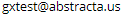
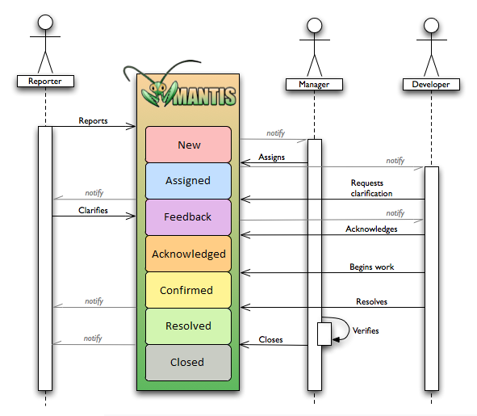
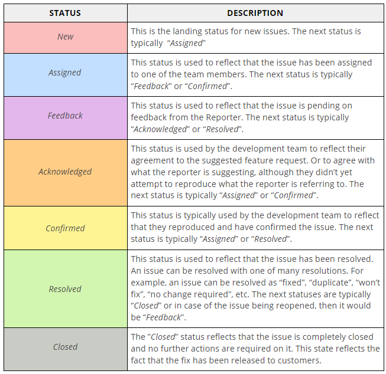

We manage the GXtest incidents with Mantis Bug Tracker through the following link: http://support.abstracta.com.uy. Only GXtest clients will be able request a user to .
The Reporter should know the different status meanings and the Mantis workflow:

- The Reporter reports an issue to Mantis; the issue is upgraded to status New
- The Manager is notified by Mantis of the incoming issue; the issue is upgraded to status Assigned
- The Manager or Developer may optionally request clarification; the issue is upgraded to status Feedback
- The Developer acknowledges that they understand what action is required and the issue is upgraded to status Acknowledges; if no action is required, the Manager or Developer can mark the issue as Resolved
- The Developer confirms that work on the issue has begun; a Confirmed issue is in the process of being implemented
- The Developer marks the issue as Resolved when they are done, and the Reporter and Manager are notified
- The Manager verifies that the issue is resolved. This depends on the nature of the issue: it may be as simple as checking that a change is reflected but may require the reporting of new Mantis issues for more complex validation (e.g., running quality control metrics); when the fix has been released to customers the issue is marked as Closed; the Reporter is notified
In the following table, you can look at the different status of the issues:

Note that the Resolved issues will be included in GeneXus Beta Channel and will be Closed once they are included on a major GeneXus Upgrade.
|